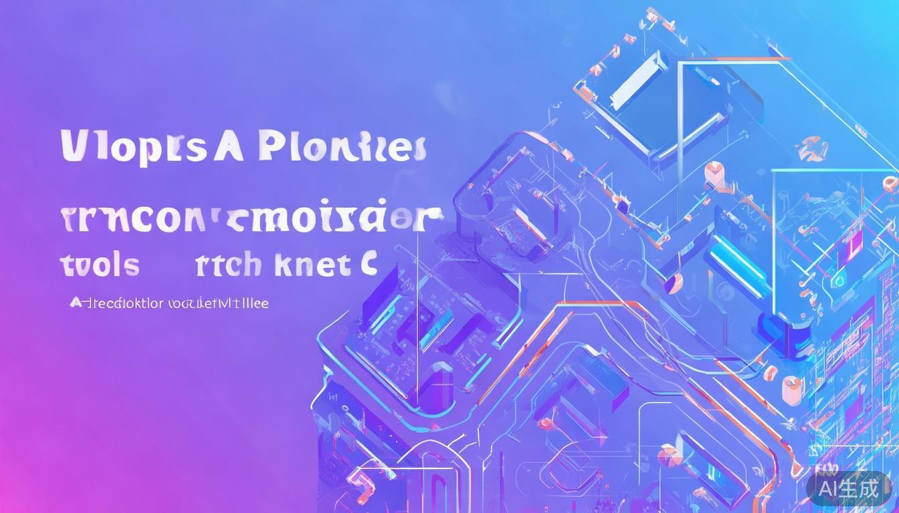

大模型原理与Transformer：一次看懂 AI 的大脑
今天我们随口说出的"大模型"三个字，背后站着 2017 年的一篇论文、一场算力军备竞赛、以及一次关于"规模能否换来智能"的大赌注。这篇文章不写代码、不堆公式，帮你一次看懂大模型到底是怎么"思考"的。
一、从规则到神经网络：AI 到底在学什么
要理解大模型，先回到一个更老的问题：机器是怎么"认字"的？
在 2010 年代之前，让机器处理语言的主流方法是"规则+统计"：语言学家写语法规则，工程师写特征模板，模型在大量标注数据上学出概率分布。这种方法在特定任务上能用，但天花板很低——它依赖人把"知识"一条条喂进去，机器自己举一反三的能力非常有限。
转折发生在 2012 年前后。深度学习证明了一件事：只要给一个足够大的神经网络、足够多的数据，它能自己学出"特征"，而不需要人手工设计。这一波浪潮把图像识别、语音识别、机器翻译一口气往前推了一大截。
但处理"序列"——比如一句话、一段代码——仍然是难题。主流方案是循环神经网络（RNN/LSTM）：一个字一个字地读，把"记忆"压缩在一个隐藏状态里。这种方式有两个先天短板：第一，必须按顺序算，并行度差，训练慢；第二，离得远的两个词，信号在传递过程中会衰减，长距离依赖记不住。
2017 年，一个 8 人团队用一篇论文终结了这场争论。它就是 Google Brain 与 Google Research 联合发表的 《Attention Is All You Need》（arXiv:1706.03762，2017 年 6 月 12 日首版，同年 12 月在 NeurIPS 2017 正式发表），正式提出了 Transformer 架构。
二、Transformer 登场：注意力即一切

Transformer 的核心思想出奇地简单：不要循环结构了，让每个词直接"看"句子里的所有其他词，自己判断谁更重要。
这个"自己判断谁更重要"的操作，就是自注意力（Self-Attention）。它的数学过程是：
- 把每个词映射成三个向量——Query（查询）、Key（键）、Value（值）；
- 用 Query 去和所有词的 Key 做点积，得到一组"关注分数"；
- 用 softmax 把分数变成权重，再用权重对所有 Value 加权求和，得到这个词的新表示。
直觉上，Query 像"我要找什么"，Key 像"我这里有什么"，Value 像"我实际能提供什么"。一篇句子里，每个词都同时扮演这三个角色，互相"对话"一遍，结果就是大家都被重新编码成"既保留自己、又融合了上下文"的新向量。
这套机制解决了 RNN 的两个老毛病：并行——所有词可以同时算，不再排队；长距离——任意两个词之间只隔一步，信号不衰减。
Transformer 还引入了两个关键设计：
- 多头注意力（Multi-Head Attention）：同时开多组 Q/K/V，让模型在不同子空间里学不同的关系——一组看语法，一组看语义，一组看指代。
- 位置编码（Positional Encoding）：因为注意力本身不包含"顺序"信息，作者用一组正弦/余弦函数给每个位置打上"坐标"，让模型知道"谁先谁后"。
在 WMT 2014 英德翻译任务上，这个新架构把当时的 BLEU 分数刷到了 28.4，比所有 RNN 基线高出 2 个 BLEU 以上，训练时间还只有原来的几分之一。Transformer 一战成名。
图：Transformer 编码器-解码器结构（注意力块 + 前馈网络 + 残差 + LayerNorm）
图 1：Transformer 编码器-解码器结构示意（简化版）。每个编码层/解码层都包含多头自注意力与前馈网络两个核心子层，外加残差连接与 LayerNorm。
三、预训练、微调与 Scaling Law：模型是怎么"长大"的
Transformer 解决了"怎么算"的问题，但真正让它"有内容"的，是训练范式的革命。
第一阶段：预训练（Pretraining）。把互联网上能爬到的大规模文本（几千亿个 token）丢给模型，让它做一件极其简单的任务——猜下一个词。听起来不可思议，但正是这个任务逼着模型学会了语法、事实、推理、风格。OpenAI 的 GPT-2（2019，15 亿参数）和 GPT-3（2020，1750 亿参数）把这个路线做到了极致：只靠"猜下一个词"，GPT-3 就涌现出了少样本学习能力——你给它一两个例子，它就能做新任务。
第二阶段：指令微调（Instruction Tuning）。OpenAI 在 2022 年的 InstructGPT 论文（Ouyang et al., arXiv:2203.02155）里提出：用人类写的"指令-回答"数据对基础模型做微调，模型一下子变得"听话"了——你问什么，它就答什么，而不是接着你的话往下编。
第三阶段：RLHF（基于人类反馈的强化学习）。再让人类给模型的不同回答打分，用这个打分训练一个"奖励模型"，再用强化学习把大模型"调"得更符合人类偏好。ChatGPT 之所以"好用"，关键就在这一步。
但真正驱动大模型"能力跃迁"的，是另一条更底层的规律——Scaling Law（标度律）。2020 年 OpenAI 的 Kaplan 等人在论文《Scaling Laws for Neural Language Models》（arXiv:2001.08361）里发现：模型的"损失"（可以理解为"犯错程度"）随参数规模、数据规模、算力规模的幂次关系平滑下降。这意味着——只要肯堆规模，能力就会可预测地变强。这个发现点燃了全球的算力军备竞赛。
2022 年 DeepMind 的 Chinchilla 论文（Hoffmann et al., arXiv:2203.15556）进一步指出：在固定的算力预算下，模型参数和训练数据应该"等比例"放大才最优——模型不能光"长大"，还得"吃够"。这条规律直接影响了后来所有大模型的训练配比。
图：大模型能力演进时间线
图 2：从 2017 到 2025+，大模型走过的关键里程碑
四、从 GPT 到多模态大模型：会听、会看、会画
2023 年起，大模型从"只会读文字"扩展到"能看图、能听声、能画图、能生成视频"。这条路的技术核心，是把不同模态的信号都"翻译"成 token 序列，然后让同一个 Transformer 统一处理。
典型的多模态大模型架构有两条路线：
- 统一编码器路线：图像被切成小块（patch），类比文字的 token，喂进同一个 Transformer。Meta 的 ViT（Vision Transformer）就是这条路。
- 跨模态对齐路线：用一个"投影层"把图像/音频特征映射到文本的语义空间，让大语言模型"看见"和"听见"。OpenAI 的 CLIP、GPT-4V，Google 的 Gemini 都属此类。
到 2025–2026 年，主流前沿模型几乎都具备：
- 长上下文：单次能读 100 万 token 以上的资料（相当于一本中篇小说）；
- 工具调用：能主动调用搜索引擎、代码执行、图像生成等外部工具；
- 推理增强：OpenAI o1/o3 系列、DeepSeek-R1 用"思维链"让模型"多想一会儿"，数学和代码能力大幅提升；
- 原生多模态：输入输出同时支持文、图、音、视频。
中国厂商也全面跟上：DeepSeek、智谱、文心、通义、Kimi、可灵、即梦...开源与闭源路线并行，2025 年起中国开源大模型在全球榜单上频繁登顶。
图：Q·K·V 注意力机制示意
图 3：自注意力的核心三步——打分、归一、加权求和
五、普通人如何借力大模型
理解原理不是为了造大模型，而是为了用对大模型。几个反直觉但很重要的认知：
1. 它不是在"思考"，是在"续写"
大模型的本质是"根据上文猜最可能的下一个 token"。当它写出"李白的代表作是《静夜思》"时，它并不是"知道"李白，而是"在所有可能的下文中，这一行的概率最高"。这意味着：你给的上下文（提示词）几乎决定一切。
2. 规模是"涌现"的前提
很多能力（多步推理、代码理解、少样本学习）只在参数规模跨过某个阈值后突然出现——这就是著名的"涌现现象"。这也解释了为什么 2023 年之后，所有厂商都在拼"千亿参数 + 万亿 token"。
3. 它会一本正经地胡说（幻觉）
因为它只做"概率续写"，没有内置的事实核查机制。遇到不确定的内容，它会"自信地编"。对抗幻觉的方法是：给它检索工具（RAG）、让它引用来源、让多模型互相校验。
4. 现在的最佳实践
| 场景 | 推荐做法 |
|---|---|
| 写文章/翻译/总结 | 直接对话 + 明确格式要求 |
| 查资料/事实 | 开"联网搜索"或用 RAG 喂资料 |
| 复杂推理/数学 | 用推理增强模型（o1、DeepSeek-R1），并允许它"一步步想" |
| 重复性工作流 | 搭 Agent 智能体，让它调用工具自动跑 |
记住一句话：大模型不是替代你的大脑，而是放大你大脑的带宽。会用提示词、会拆任务、会用工具的人，效率是普通用户的 5–10 倍。
"我们正站在一个新物种的起点。它不是人，但它会说话、会画画、会写代码、会做科研。学会与它协作，是这代人的必修课。"
5.5 怎么选你的第一个大模型？
面对几十个大模型，新手最容易"选择困难"。给你一个三步筛选法：
第一步：明确你用它做什么。写文案/翻译/总结——闭源旗舰（GPT-4o、Claude 3.5、通义千问、文心一言）体验最好；写代码——Cursor + Claude 或 GitHub Copilot 是主流；想本地跑、保护隐私——开源模型（Qwen2.5、Llama3.1、DeepSeek）配合 Ollama 就能用 7B~70B 的版本。
第二步：先免费试用，再付费。所有主流模型都提供网页版免费额度（每天/每月的 token 限制）。花一周时间把同一个任务在 3-4 个模型上跑一遍，记录哪家的回答你"最不想改"。
第三步：关注"上下文长度"和"工具调用"两个硬指标。前者决定你能不能一次性喂一本手册；后者决定它能不能联网、写代码、读文件。2024 年后，主流模型都支持 128K~1M 上下文和函数调用，这不再是选型的关键差异——真正拉开差距的是推理质量、回答风格、是否中文友好。
记住：没有"最好的模型"，只有"最适合你当下任务的模型"。模型每 3-6 个月大迭代一次，固定使用某一家不一定是好策略。
一个真实经验：2024-2025 年我同时订阅 GPT-4o、Claude 3.5、Gemini 1.5 Pro，每个月成本不到一杯咖啡钱，但写代码用 Claude、写文案用 GPT、分析超长文档用 Gemini——把每个模型当"专科医生"用，比"找一个全科医生"效率高得多。
资料来源
- Vaswani A. et al. (2017). Attention Is All You Need. arXiv:1706.03762. https://arxiv.org/abs/1706.03762
- Devlin J. et al. (2018). BERT: Pre-training of Deep Bidirectional Transformers for Language Understanding. arXiv:1810.04805. https://arxiv.org/abs/1810.04805
- Radford A. et al. (2019). Language Models are Unsupervised Multitask Learners (GPT-2). OpenAI Technical Report.
- Brown T. et al. (2020). Language Models are Few-Shot Learners (GPT-3). arXiv:2005.14165. https://arxiv.org/abs/2005.14165
- Kaplan J. et al. (2020). Scaling Laws for Neural Language Models. arXiv:2001.08361. https://arxiv.org/abs/2001.08361
- Ouyang L. et al. (2022). Training language models to follow instructions with human feedback (InstructGPT). arXiv:2203.02155. https://arxiv.org/abs/2203.02155
- Hoffmann J. et al. (2022). Training Compute-Optimal Large Language Models (Chinchilla). arXiv:2203.15556. https://arxiv.org/abs/2203.15556
- OpenAI. GPT-4 Technical Report (2023). https://openai.com/research/gpt-4
- Wikipedia: Transformer (deep learning architecture). https://en.wikipedia.org/wiki/Transformer_(deep_learning_architecture)
出处声明：本页内容为白驹全局大脑原创，或已标注引用来源；改编内容遵循原始项目许可证（如 MIT / CC），不侵犯原作者权益。若引用内容涉及版权问题，请联系我们更正。